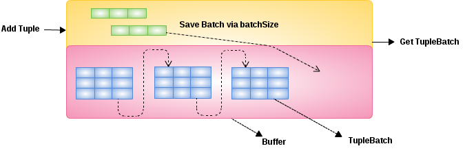

ElementSymbol id = new ElementSymbol("id");
id.setType(Integer.class);
ElementSymbol name = new ElementSymbol("name");
name.setType(String.class);
List<ElementSymbol> elements = Arrays.asList(id, name);
BufferManager bm = BBuffer.Factory.builder().bufferDir("target/buffer").build();
TupleBuffer tb = bm.createTupleBuffer(elements, "Users", TupleSourceType.PROCESSOR);
tb.setBatchSize(4);
for(int i = 0 ; i < 10 ; i ++) {
tb.addTuple(Arrays.asList(i, "name-" + i));
}
tb.setFinal(true);
TupleBatch batch = tb.getBatch(6);
System.out.println(batch);
TupleBufferTupleSource tupleSource = tb.createIndexedTupleSource();
while(tupleSource.hasNext()) {
System.out.println(tupleSource.nextTuple());
}
tupleSource.closeSource();TupleBuffer

-
A
TupleBufferis bind with a TupleSource, is a bridge between TupleSource and Buffer, it used to keep all tuples from a TupleSource. At a specific processing time, theTupleBufferonly keep a less than batchSize number of Tuples, the others be kept in Buffer per Batch. -
A
TupleBuffercan get the batch containing the given row, the returned batch may be empty or may begin with a row other than the one specified. -
A
TupleBuffercan create a TupleSource, which the tuples can be get iteratively. -
A
TupleBufferhas a BatchManager and a LobManager, the BatchManager used to form tuples to a TupleBatch and add it to Buffer, the LobManager used to pruge the Blob/Clob/Object column to FileStore directly.
| Name | Note |
|---|---|
tupleSourceID |
the id of TupleSource |
rowCount |
hints how many tuples in |
batchSize |
the size of a TupleBatch, while the tuple be add to |
isFinal |
if set to true hints all tuples from TupleSource be add to |
forwardOnly |
hints the TupleBatch will be removed from |
removed |
default is false, only be set to true once all TupleBatch be removed. |
Example
Below is a exmaple of add tuple to TupleBuffer, get TupleBatch from TupleBuffer and create TupleSource via TupleBuffer: